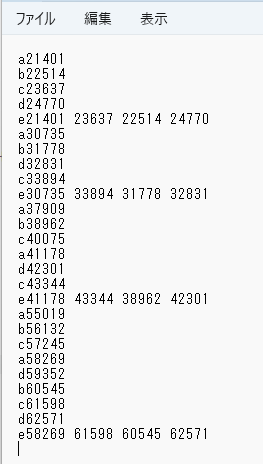

#include <:BleKeyboard.h>
BleKeyboard bleKeyboard("ESP32 Keyboard");
const int button0Pin = 15;
const int button1Pin = 2;
//前フレーム押したか検出用
bool pushed0 = false;
bool pushed1 = false;
//2つ離したときに押したか検出用
bool isInput0 = false;
bool isInput1 = false;
//各ボタンを押したり放した時間
unsigned long down0Time = 0;
unsigned long up0Time = 0;
unsigned long down1Time = 0;
unsigned long up1Time = 0;
void setup() {
pinMode(button0Pin, INPUT_PULLUP);
pinMode(button1Pin, INPUT_PULLUP);
Serial.begin(115200);
Serial.println("Starting BLE work!");
bleKeyboard.begin();
}
void loop() {
if (bleKeyboard.isConnected()) {
//ボタン0の入力処理
int button0Value = digitalRead(button0Pin);
if(button0Value == LOW){
if(pushed0 ==false){
bleKeyboard.print("a");
pushed0 = true;
isInput0 = true;
down0Time = millis();
bleKeyboard.println(down0Time);
}
}
else{
if(pushed0){
bleKeyboard.print("c");
up0Time = millis();
bleKeyboard.println(up0Time);
}
pushed0 = false;
}
//ボタン1の入力処理
int button1Value = digitalRead(button1Pin);
if(button1Value == LOW){
if(pushed1 ==false){
bleKeyboard.print("b");
pushed1 = true;
isInput1 = true;
down1Time = millis();
bleKeyboard.println(down1Time);
}
}
else{
if(pushed1){
bleKeyboard.print("d");
up1Time = millis();
bleKeyboard.println(up1Time);
}
pushed1 = false;
}
//入力情報からの処理
if(pushed0 ==false && pushed1 == false){
if(isInput0 && isInput1){
//2つ押して2つはなした
bleKeyboard.print("e");
bleKeyboard.print(down0Time);
delay(100);
bleKeyboard.print(" ");
bleKeyboard.print(up0Time);
delay(100);
bleKeyboard.print(" ");
bleKeyboard.print(down1Time);
delay(100);
bleKeyboard.print(" ");
bleKeyboard.println(up1Time);
}
isInput0 = false;
isInput1 = false;
}
}
delay(10);
}
